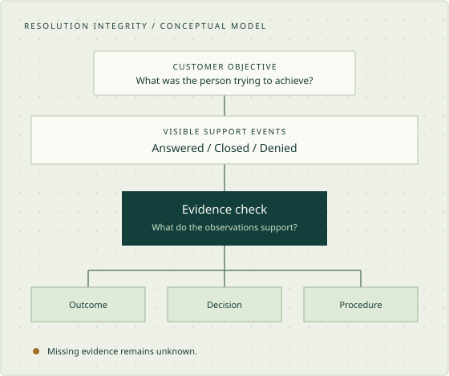

Matching fixture labels
κ = 0.875
Research note 01 / Howl ecosystem
Answered is
not resolved.
What can a support history actually prove about the customer’s outcome?
A customer-reported subscription provider support experience motivates a practical proposal for clearer checkout and support decisions. Open methods keep the evidence boundaries inspectable.

01 / The research question
A status is an event.
A resolution needs evidence.
A reply, a closed ticket and an SLA-compliant response can describe process performance without establishing whether the original objective was achieved.
That observation does not make every unfavorable outcome a support failure. A properly explained denial may complete a decision. A missing visible update leaves internal activity unknown. Satisfaction, decision completeness, procedural quality and demonstrated outcomes need separate treatment.
Working hypothesis
A portable, local and inspectable evidence contract may complement existing QA. Whether it adds useful value remains unproven.
02 / A precise vocabulary
Four states worth keeping separate.
| Signal | What it establishes | What still needs evidence |
|---|---|---|
| Answered | A response exists. | Whether it addresses the original objective. |
| Closed | A workflow status changed. | Whether the objective was achieved or a decision completed. |
| Denied | A request was rejected. | The stated reason, applicable context and procedural adequacy. |
| Supported outcome | Visible evidence supports a specific result. | Anything outside the observed history. |
Practical proposal / Service design
One owned path from correction
request to a clear decision.
The immediate goal is a constructive support improvement proposal. A new software product is optional.
When self-service cannot handle a request, the customer needs to understand what happens next. This proposed workflow keeps policy decisions separate from communication quality and execution. It has not been piloted or shown to improve customer outcomes.
Preserve the original correction request
Record when correction was first attempted and explain what can happen while payment is pending and after settlement. Do not imply a remedy is available before eligibility is established.
Acknowledge the failed self-service step
Retain information already supplied. Repeat a referral only when a changed condition makes retry useful, and explain that change.
Identify the decision and authorized route
Separate an eligibility explanation from missing information or an exception request. Use an authorized review path where policy provides one.
Make ownership and the next update visible
Show which team or queue owns the next action, what remains pending and when an update can reasonably be expected. Queue assignment is not proof that an individual review occurred.
Give a complete, specific decision
Explain the applicable condition, relevant case facts and any available review route. A properly justified denial can complete a decision even when the requested benefit is not granted.
Confirm any approved remedy took effect
Distinguish approval from execution. Confirm the actual correction or refund when evidence supports it; otherwise keep the execution outcome unknown.
Checkout is part of the journey
Inspect whether the term is explicitly chosen, the selection persists and the total immediate charge is clear beside final confirmation. These are proposed checks, not findings about a particular vendor or its intent.
How a team could test the proposal
Define decision-completeness and repeated-referral rates before a small, consented pilot. Measure response time, time to a complete decision and approved-remedy execution separately. Preserve legitimate-denial and necessary-retry controls; report missing evidence, errors and customer understanding of the next step.
No pilot results or demonstrated improvement are claimed. Read the full practical proposal ↗
Discovery before implementation
This is not an empty field.
Established QA already addresses much of the broad feature list. Zendesk documents solution and comprehension categories; Intercom distinguishes assumed from confirmed resolution. Product documentation demonstrates overlap, not measured adequacy for this proposed workflow.
If existing configuration is sufficient, an open rubric or small integration is the better outcome.
03 / Reproducible methods
Small tooling. Explicit boundaries.
The implemented contribution is review infrastructure, not an automated ticket classifier.
Observe
Twenty-four synthetic histories contain 103 events. Reviewer packets contain observations and a shared rubric, without author expectations.
Bind the evidence
Versioned manifests, strict parsing and immutable byte snapshots detect drift and malformed inputs. Hashes establish byte identity, not truth or authenticity.
Collect judgments
Complete CSV submissions reference visible evidence. Outcome, decision, procedure, satisfaction and audit concern are distinct dimensions.
Describe agreement
Reports retain all categories, confusion matrices, disagreement IDs and undefined kappa. No rows disappear silently.
Preserve authority
The numeric threshold and human gate are separate. Self-declared provenance, AI reviews and generated labels cannot certify an independent human study.
Python 3.11+ · no runtime dependencies
git clone https://github.com/howlcipher/supportloop.git
cd supportloop
python3 scripts/verify_packet.py
python3 -m scripts.demo_reviews --out runs/first_demoChoose a new output directory on each run. Review protocol and full CLI reference ↗
04 / Findings and limits
Demonstrated arithmetic.
Unproven product value.
Synthetic arithmetic fixtures exercise the reporting logic. Their labels are arbitrary; they do not judge the underlying tickets.
Matching fixture labels
κ = −0.5
Single-category agreement
κ is undefined
In every demonstration, the human gate remains PENDING.
What the software shows
Failure-oriented tests exercise intake, arithmetic, snapshot consistency and authority boundaries. A verified event-reference defect was identified in external AI code review; the review record documents its correction and regression evidence.
Provider review and reconciliation ↗What it does not show
No measured ticket accuracy, independent human agreement, customer benefit or market demand. No configured commercial comparison. Publicly exposed synthetic cases cannot become the future locked benchmark.
Read the evaluation contract ↗05 / Howl ecosystem
Coordination without self-certification.
- HowlPlane
- Task specifications, verification commands, evidence records and review reconciliation.
- HowlDream
- Hypothesis clustering and discovery support. Generated ideas are not evidence of novelty or demand.
- HowlProof
- Bounded structural and supplied arithmetic checks. Practical usefulness remains inconclusive.
- HowlWriter
- Local documentation normalization and lint. These operations do not certify facts or authorship.
06 / The next evidence gate
Narrow the claim.
Make the next test count.
The immediate deliverable is an experience-led case study and a constructive process proposal. An honestly qualified observational account does not require a product benchmark. Claims about an automated auditor would require independent human reviews, a configured existing-tool comparison and a locked benchmark; that optional track remains pending.
An upstream UX branch asks whether annual-plan defaults increase accidental commitment. No vendor-specific historical checkout has been inspected. The published observational case is separate from the synthetic evaluation; no misconduct, eligibility or design-intent conclusion is asserted.
Read the discovery decision ↗07 / Open research materials
Inspect it. Reproduce it. Challenge it.
Case study
A clearer support journey ↗
A customer-reported subscription support experience, its limits and practical improvements.
01Source & demonstration ↗
Python toolkit, synthetic histories and reproducible CLI.
02Engineering findings ↗
Prior art, implementation, falsification and evidence limits.
03Gated roadmap ↗
Stop/go criteria from feasibility to external validation.
04Findings & progress ↗
Reproduced defects, research dependencies and journal links.